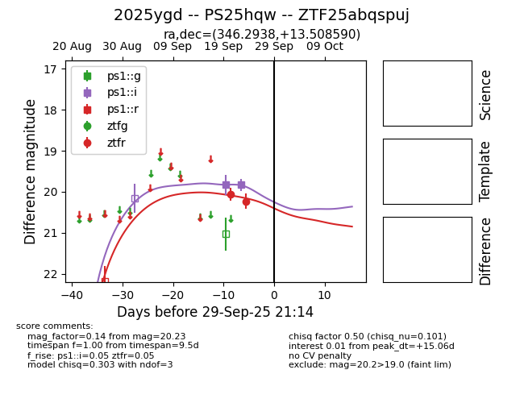
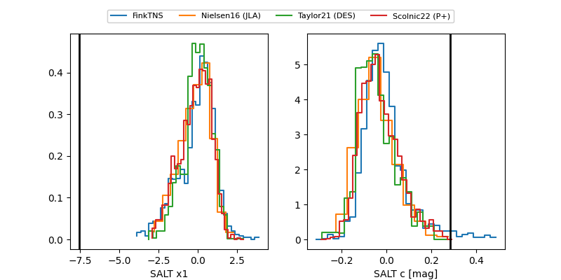

FINK: ZTF25abqspuj
Lasair: ZTF25abqspuj
ALeRCE: ZTF25abqspuj
TNS: 2025ygd
YSE: 2025ygd
2025ygd (yse,tns)
ZTF25abqspuj (ztf,fink)
PS25hqw (panstarrs)
equatorial (ra, dec) = (346.2938,+13.50859)
galactic (l, b) = (87.2002,-41.87360)


last ps1::i=19.83, ztfr=20.23
2 ps1::i, 2 ztfr detections